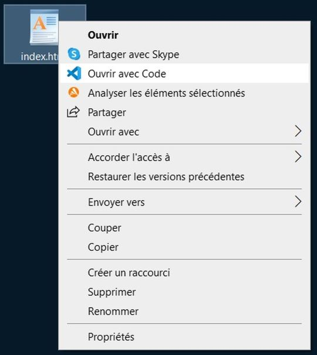
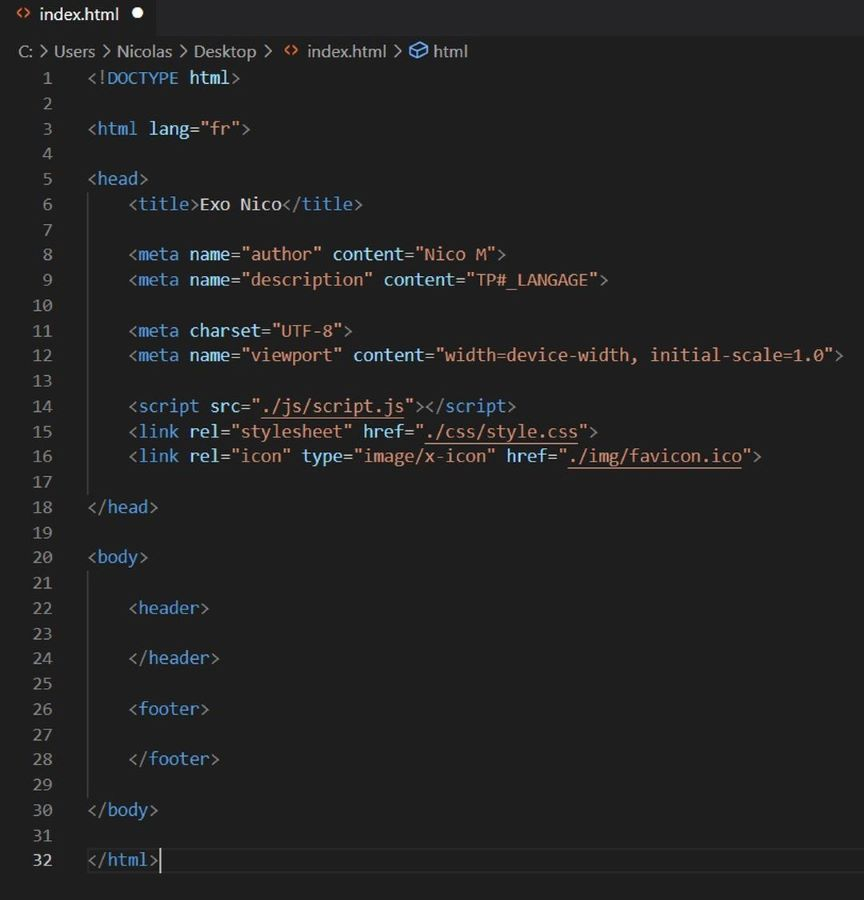
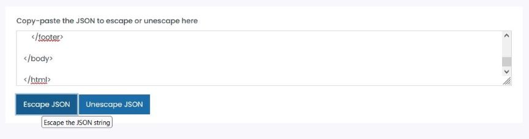
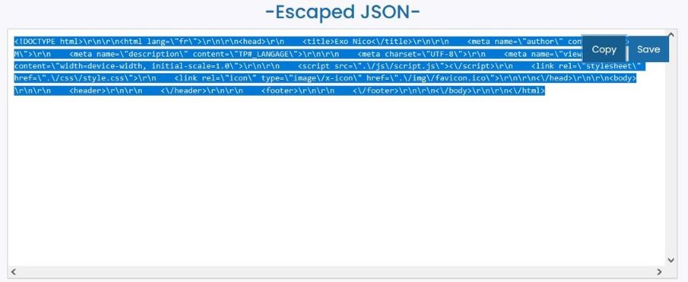
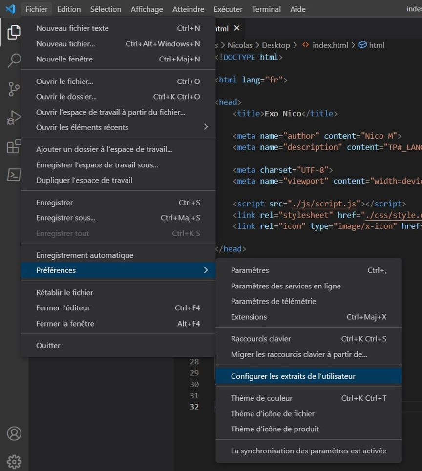
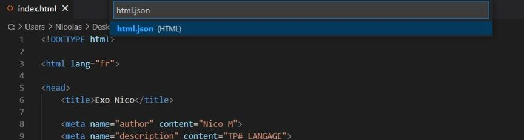
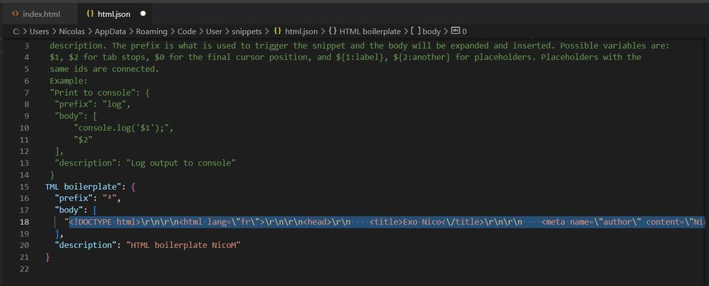
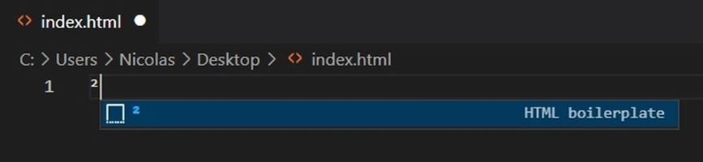
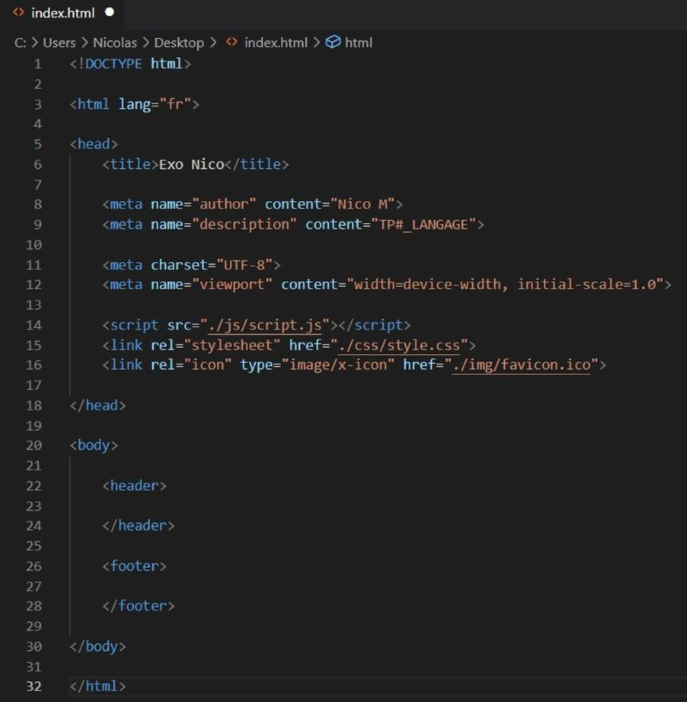

1. Créez un fichier html :

Créez un fichier .html et ouvrez le avec Visual Studio Code (clic droit, "Ouvrir avec Code"
2. Formalisez votre template :

Mettez en forme votre template (base) html. ci-dessus :
- Title : Le titre de votre document (celui qui apparait sur l'onglet de votre navigateur)
- Meta "author" : La personne qui a réalisé la page html
- Meta "Description" : Une rapide description de l'objet de la page html
- Meta "charset" : Le format de codage (ici UTF-8, le plus standard)
- Meta "viewport" : Balise pour faciliter l'affichage sur mobiles, plus d'explications : ICI
- Script : Lien vers le fichier javascript (ici le fichier "script.js" dans le répertoire "js"
- Stylesheet : Lien vers le fichier css (ici le fichier "style.css" dans le répertoire "css")
- Favicon : Lien vers l'image (16x16 ou 32x32) qui définie le raccourci de votre onglet
3. Copiez et collez votre code HTML dans un traducteur en ligne :

Créez un fichier .html et ouvrez le avec Visual Studio Code (clic droit, "Ouvrir avec Code"
soustitre de l'image
4. Recopiez le code JSON ainsi obtenu :

Créez un fichier .html et ouvrez le avec Visual Studio Code (clic droit, "Ouvrir avec Code"
soustitre de l'image
5. Configurez les infos utilisateur sur Visual Studio Code :

Créez un fichier .html et ouvrez le avec Visual Studio Code (clic droit, "Ouvrir avec Code"
soustitre de l'image
6. Ouvrez le fichier html.json :

Créez un fichier .html et ouvrez le avec Visual Studio Code (clic droit, "Ouvrir avec Code"
soustitre de l'image
7. Créez votre boilerplate dans html.json :

Créez un fichier .html et ouvrez le avec Visual Studio Code (clic droit, "Ouvrir avec Code"
soustitre de l'image
8. Assignez une touche raccourci à votre boilerplate :

Créez un fichier .html et ouvrez le avec Visual Studio Code (clic droit, "Ouvrir avec Code"
soustitre de l'image
9. Résultat :

Créez un fichier .html et ouvrez le avec Visual Studio Code (clic droit, "Ouvrir avec Code"
soustitre de l'image